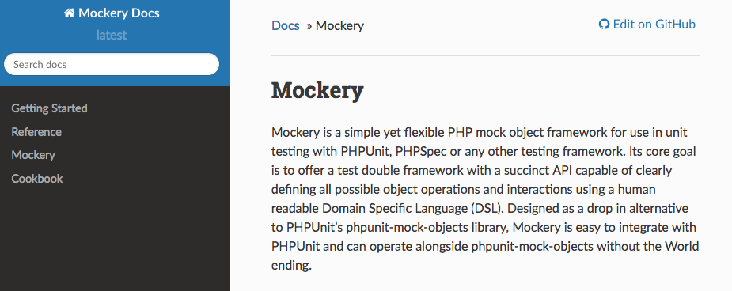
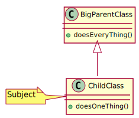

PHPUnit
Mockery
Hamcrest
ZooRoyal IT
Sebastian Knott
Wie hilft uns Mockery?

Beispiel gefällig?
Testen eines fluent interfaces …
… mit PHPUnit-Mocks
… mit Mockery-Mocks
Was kann Mockery?
Doubles

Doubles in Tests
- Abhängigkeiten des Testsubjekts durch Doubles ersetzt
- Subjekt wird vollständig isoliert (keine Nebeneffekte)
- Abhängigkeiten müssen nicht aufwendig erzeugt werden
- Interaktion des Subjekts mit den Doubles kann geprüft werden
$container = Mockery::mock(ContainerInterface::class);
$subject = new MyClass($container);
Mocks

Spies

$container = Mockery::mock(Container::class);
$container->shouldReceive('foo')->once()
->with(stringValue())->andReturn(true);
$subject = new MyClass($container);
$subject->call();
$container = Mockery::spy(Container::class);
$subject = new MyClass($container);
$subject->call();
$container->shouldHaveReceived('foo');
Big Parent Class

Test in Mockery
Big Parent Class
Protected Edition
Test in Mockery
The dreaded new operator
Test
Complicated Callbacks
Hamcrest
Matchers that can be combined to createflexible expressions of intent.
– hamcrest.org
MatcherAssert::assertThat(
['asd', 'qwe'],
both(hasItem('asd'))
->andAlso(everyItem(is(stringValue())))
);
Test